03/07/2025 — Co giật tái diễn. Hay là ngất? Chẩn đoán được đưa ra sau 20 năm. Nhưng rồi lại thay đổi lần nữa!
Bản dịch tiếng Việt của bài "Recurrent Seizure. Or was it syncope? Diagnosis made after 20 years. But then changed again!" – Dr. Smith’s ECG Blog. Giữ nguyên toàn bộ 11 hình ảnh của bản gốc.

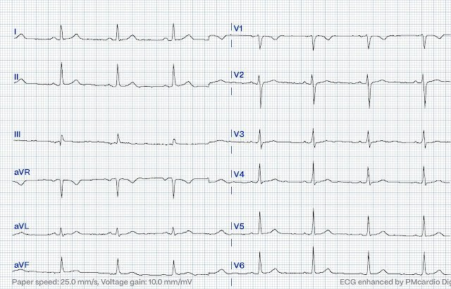
Bài này do Magnus Nossen viết.
Ca bệnh hôm nay hơi khác so với các ca thường gặp trên Dr. Smith’s ECG blog. Ca này kể lại bệnh sử của một bệnh nhân kéo dài qua nhiều năm.
Bệnh nhân là một phụ nữ ở độ tuổi 20, có chẩn đoán động kinh từ thời thơ ấu. Cô có tiền sử co giật tái diễn suốt 20 năm. Cô đã dùng nhiều loại thuốc chống co giật nhưng các cơn co giật chưa bao giờ được kiểm soát hoàn toàn.
Điện tâm đồ dưới đây được ghi trong một trong nhiều lần cô đến bệnh viện. Bạn có thấy điều gì đáng lo ngại trên điện tâm đồ này không?
Điện tâm đồ #1

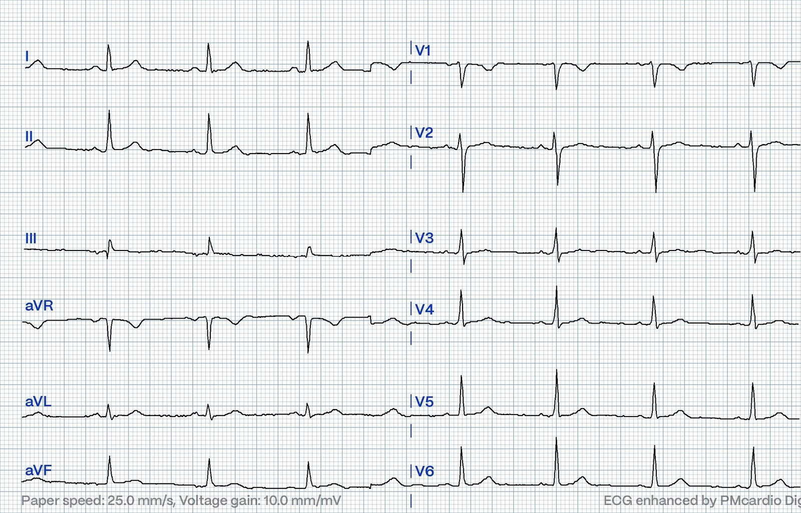
Điện tâm đồ #1, lưu trong hồ sơ, được ghi khi bệnh nhân ở độ tuổi đầu thiếu niên.
Điện tâm đồ cho thấy nhịp xoang 68 lần/phút. Phức bộ QRS hẹp. Khoảng PR = 130 ms, trục mặt phẳng trán bình thường và tăng tiến sóng R bình thường. Điện tâm đồ nhi khoa thường có những đặc điểm vốn bị coi là bất thường ở người lớn nhưng hoàn toàn bình thường ở trẻ em. Chẳng hạn, lực thất phải nổi trội và nhịp nhanh xoang thường gặp ở trẻ sơ sinh và trẻ nhỏ. PR ngắn thường gặp ở người trẻ tuổi. Đến tuổi vị thành niên, điện tâm đồ không nên khác quá nhiều so với người lớn, dù sóng T đảo ngược ở các chuyển đạo trước tim phải có thể vẫn còn tồn tại.
Do có các cơn mất ý thức và than phiền hồi hộp đánh trống ngực, bệnh nhân đã được ghi HOLTER nhiều lần. Các bản ghi HOLTER được mô tả như sau:
Nhịp xoang bình thường với thỉnh thoảng có ngoại tâm thu thất
Tuy nhiên, có một lần điện tâm đồ lưu động đã ghi được một cơn nhịp nhanh đều như minh họa dưới đây. Bệnh nhân không bị mất ý thức trong cơn nhịp nhanh này.
HOLTER # 1

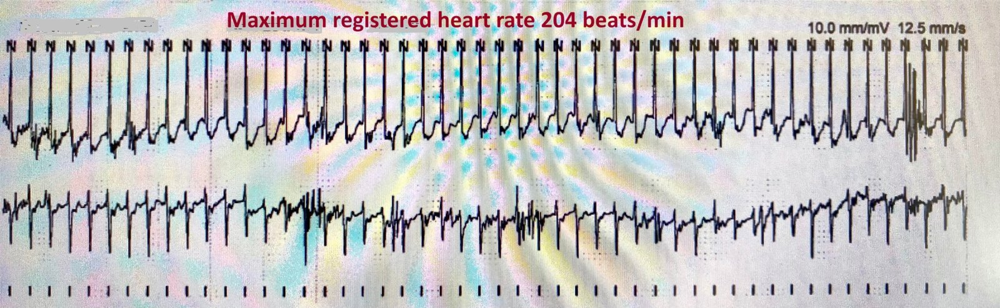
Đoạn trích ở trên cho thấy một nhịp nhanh QRS hẹp đều, tần số 204 lần/phút. Mặc dù chất lượng hình ảnh kém và tốc độ giấy khác thường (12,5 mm/s), có thể chắc chắn đây là một dạng SVT. Cơn kết thúc đột ngột, phù hợp với PSVT — vốn có nhiều loại. Tính chất đột ngột của cơn nhịp nhanh giúp loại trừ nhịp nhanh xoang (mà ở nhóm người trẻ tuổi có thể đạt tần số tim trên 200 lần/phút).
Bệnh nhân đã nhập viện nhiều lần, thường là để tối ưu hóa điều trị nội khoa kiểm soát co giật. Trong một lần nằm viện như vậy, đã ghi được điện tâm đồ dưới đây (điện tâm đồ #2) và một bản ghi theo dõi từ xa (Telemetry #1). Bạn nhận định thế nào về các bản ghi này?
Điện tâm đồ # 2

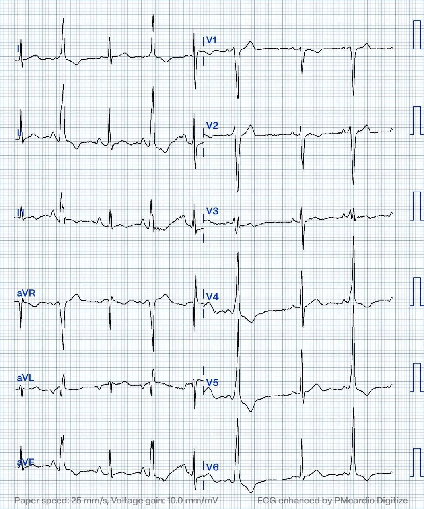
Dải nhịp theo dõi từ xa (telemetry)

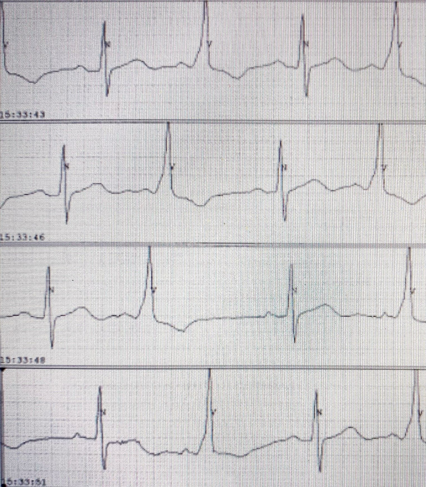
Một chuyển đạo từ dải nhịp theo dõi từ xa. Tốc độ giấy 50 mm/s.
Cả điện tâm đồ #2 lẫn dải nhịp theo dõi từ xa một chuyển đạo đều cho thấy các phức bộ QRS rộng từng lúc. Những phức bộ QRS rộng này không phải là các PVC lẻ tẻ. Phân biệt ngoại tâm thu thất lẻ tẻ với tiền kích thích từng lúc trên điện tâm đồ có thể khó, vì cả hai đều tạo ra phức bộ QRS rộng. Tuy nhiên, có những khác biệt quan trọng:
PVC thường sớm rõ ràng — phức bộ QRS xuất hiện sớm hơn dự kiến, làm khoảng RR ngắn đi rõ rệt. Sóng R đến trước thời điểm dự kiến, và QRS thường rộng, hình dạng bất thường vì các thất được hoạt hóa bên ngoài hệ thống dẫn truyền bình thường. Sau một PVC thường có khoảng nghỉ bù trước nhát bình thường kế tiếp.
Tiền kích thích từng lúc là sự hoạt hóa thất sớm qua một đường phụ. Điều này tạo ra phức bộ QRS rộng có sóng delta — phần lên trát đậm ở đầu QRS do thất được hoạt hóa ban đầu qua đường phụ. Khác với PVC, các nhát này không thực sự sớm; đỉnh sóng R nhìn chung xuất hiện đúng thời điểm dự kiến, vì nhịp vẫn do nút xoang chi phối và thường có sự hòa trộn hoạt hóa giữa đường phụ và hệ thống dẫn truyền tự nhiên.
Dưới đây, các sóng delta từng lúc được đánh dấu bằng mũi tên.
Đoạn trích điện tâm đồ # 2 với các mũi tên đỏ chỉ vào sóng delta

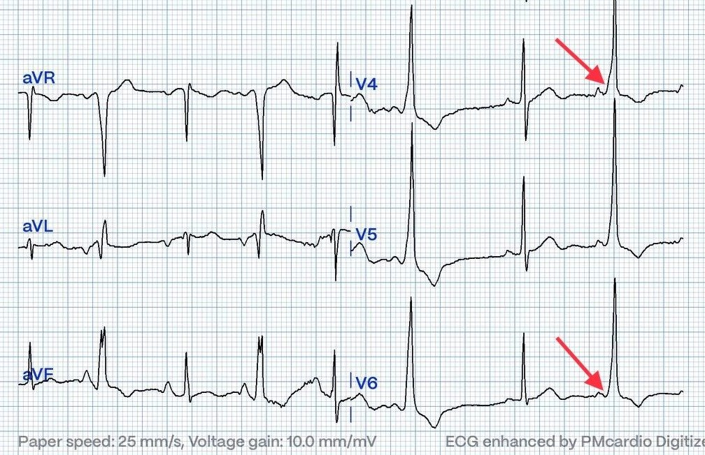
Nhìn lại điện tâm đồ đầu tiên của ca hôm nay (điện tâm đồ # 1) và áp dụng “kính nhìn hồi cứu” (retrospectoscope), chúng ta có thể nghi ngờ có sóng delta rất kín đáo ở các chuyển đạo V3-V5.
Việc phát hiện SVT cùng tiền kích thích trên điện tâm đồ cho phép chẩn đoán hội chứng WPW. Nếu chỉ có tiền kích thích, dùng thuật ngữ tiền kích thích (đơn thuần). Không phải mọi bệnh nhân có tiền kích thích đều sẽ xuất hiện rối loạn nhịp vào lại. Cơn nhịp nhanh QRS hẹp đã trình bày ở trên (HOLTER #1) có thể là AVRT xuôi chiều hoặc AVNRT. Ở bệnh nhân WPW, AVRT xuôi chiều (khi đó QRS sẽ hẹp) gặp nhiều hơn hẳn so với AVNRT.
Người ta nghi ngờ các triệu chứng của bệnh nhân là do một rối loạn nhịp vào lại, và cô đã được thăm dò điện sinh lý (EP), trong đó tiến hành triệt đốt lạnh (cryoablation) một đường phụ. Dù đã triệt đốt thành công đường phụ — các triệu chứng co giật và hồi hộp đánh trống ngực vẫn tồn tại. Điều này dẫn đến một lần thăm dò điện sinh lý lặp lại, trong đó gây ra được một cơn AVNRT điển hình và đã triệt đốt thành công.
Theo kinh nghiệm của tôi, hiếm khi một bệnh nhân trẻ bị mất ý thức do một PSVT như AVRT hay AVNRT. Nếu tim bình thường về cấu trúc và chức năng tâm thu bình thường, ngất do tổn hại huyết động thứ phát sau PSVT là rất khó xảy ra. Vì vậy có lẽ bạn sẽ không ngạc nhiên khi biết rằng sau hai lần triệt đốt, bệnh nhân vẫn tiếp tục có các cơn ngất. Sau một lần ngất nữa kèm chấn thương chỉnh hình nhẹ — bản ghi HOLTER dưới đây đã được thực hiện. Bản ghi này gợi ý chẩn đoán cuối cùng. Bạn thấy gì?
HOLTER # 2

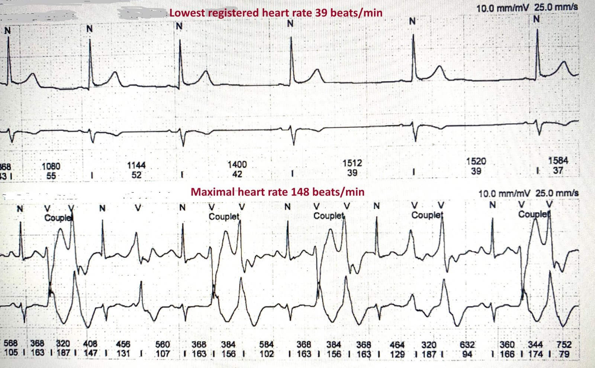
HOLTER #2: Nửa trên cho thấy tần số tim thấp nhất ghi được = nhịp chậm xoang, 39 lần/phút. Nửa dưới cho thấy tần số tim cao nhất ghi được = nhịp nhanh xoang kèm các cặp đôi PVC đa ổ, tần số 148 lần/phút.
HOLTER cho thấy nhịp xoang suốt thời gian ghi với tổng cộng ~ 5000 PVC trong 24 giờ. Đây chắc chắn là một số lượng bệnh lý, nhất là ở một người trẻ tuổi.
Bệnh nhân được yêu cầu đến bệnh viện để đánh giá thêm. Điện tâm đồ lúc nhập viện được trình bày dưới đây và rõ ràng là bất thường. Bạn sẽ mô tả điện tâm đồ này thế nào và nhận định ra sao?
Điện tâm đồ # 3

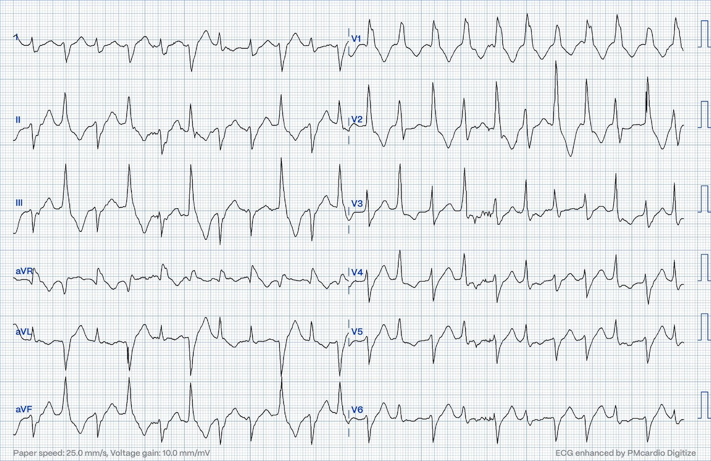
Ngay sau khi ghi điện tâm đồ này, tần số và nhịp tim của bệnh nhân trở về bình thường. Bệnh nhân được theo dõi từ xa (telemetry). Theo dõi từ xa cho thấy một quy luật: PVC ngày càng dày hơn khi hoạt động thể lực và biến mất hoàn toàn vào ban đêm và lúc nghỉ ngơi.
Bàn luận
Như đã nêu, bệnh nhân này có tiền kích thích thất từng lúc, và dù đã trải qua thủ thuật triệt đốt — các triệu chứng vẫn tồn tại và cô nhập viện với một điện tâm đồ trông kỳ dị, có nhiều phức bộ rộng với hơn một hình dạng. Điện tâm đồ #3 có cho thấy tiền kích thích từng lúc không? Có lẽ thủ thuật triệt đốt đã không thành công? Liệu có điều gì khác đang diễn ra?
Điện tâm đồ ghi lúc nhập viện (điện tâm đồ #3) cho thấy một nhịp nhanh QRS rộng với tần số tim chung là 113 lần/phút. Có hai hình dạng QRS rõ rệt luân phiên nhau (xem hình minh họa kèm theo bên dưới). Một hình dạng (A) giống dẫn truyền kiểu blốc nhánh phải kèm blốc phân nhánh trái sau (RBBB+LPFB) — và hình dạng còn lại (B) giống dẫn truyền kiểu blốc nhánh phải kèm blốc phân nhánh trái trước (RBBB+LAFB).
Đoạn trích điện tâm đồ # 3

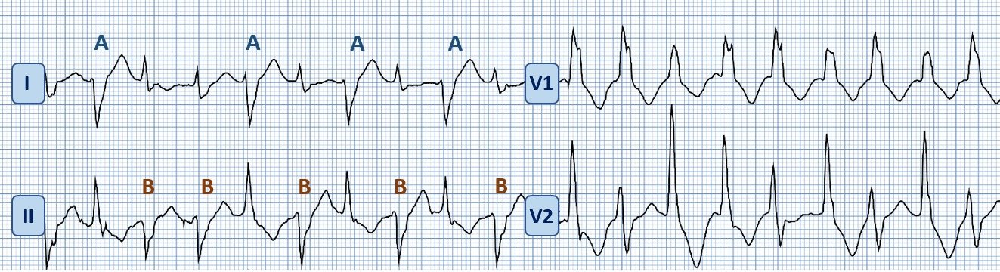
Tất cả phức bộ QRS đều có hình dạng giống RBBB. Có sự luân phiên giữa hình dạng LPFB và LAFB ở các chuyển đạo I và II.
Điện tâm đồ phù hợp với một cơn nhịp nhanh thất hai chiều (bidirectional VT) khá chậm (120-130 lần/phút). Nếu bạn có một bệnh nhân bị ngất, VT hai chiều và PVC tăng khi hoạt động thể lực hoặc căng thẳng cảm xúc — bạn có bằng chứng rất thuyết phục rằng bệnh nhân bị nhịp nhanh thất đa dạng do catecholamine (CPVT).
Bệnh nhân xác nhận rằng phần lớn các cơn co giật của cô xảy ra khi tập luyện thể lực và cô quả thực có hồi hộp đánh trống ngực khi căng thẳng cảm xúc. Trái với PSVT đơn thuần, CPVT thực sự gây tổn hại huyết động. VT đa dạng gặp trong CPVT có thể rất nhanh — và xét về huyết động thì nó giống VF. Nếu kéo dài, nó sẽ chuyển thành VF.
Một số thông tin về CPVT
CPVT hầu như luôn do đột biến gen RyR2, gen mã hóa thụ thể ryanodine. Đột biến tăng chức năng (gain-of-function) ở gen này được tìm thấy trong phần lớn các trường hợp. Đột biến làm tăng giải phóng calci thì tâm trương từ lưới cơ tương và tăng nồng độ calci nội bào. Sự gia tăng calci nội bào này có thể gây ra hậu khử cực muộn và hoạt động khởi kích dưới dạng PVC. Nồng độ calci nội bào còn được khuếch đại thêm trong các trạng thái cường adrenergic — và điều này có thể dẫn đến rối loạn nhịp thất gây tử vong (1).
Lưu ý! Digoxin làm tăng calci nội bào — và đó là lý do có thể gặp VT hai chiều trong ngộ độc Digoxin.
Siêu âm tim và điện tâm đồ lúc nghỉ thường bình thường và không giúp chẩn đoán CPVT. Nghiệm pháp gắng sức trên thảm lăn có thể gợi ý chẩn đoán khi phát hiện PVC hoặc rối loạn nhịp thất trong lúc gắng sức. Bệnh sử của bệnh nhân là then chốt, với các triệu chứng hồi hộp đánh trống ngực và ngất điển hình xảy ra khi tập luyện thể lực hoặc căng thẳng cảm xúc. Tuổi khởi phát triệu chứng trung bình (thường là một cơn ngất) là từ bảy đến 12 tuổi, dù đã có báo cáo khởi phát ở thập niên thứ tư của cuộc đời. Nếu không được điều trị, CPVT thường gây tử vong, với khoảng 30% người bệnh trải qua ít nhất một lần ngừng tim và đến 80% có một hoặc nhiều cơn ngất. Đột tử có thể là biểu hiện đầu tiên của bệnh (2)
Nhìn chung, VT hai chiều là một rối loạn nhịp thất hiếm gặp — mà trước đây thường gắn với ngộ độc digoxin hơn. Nó cũng là rối loạn nhịp đặc trưng ở bệnh nhân CPVT, như ca hôm nay minh họa. VT hai chiều cũng đã được mô tả ở bệnh nhân nhồi máu cơ tim cấp, hạ kali máu nặng do liệt chu kỳ hạ kali máu có tính gia đình, bệnh cơ tim gây loạn nhịp và viêm cơ tim.
Ngay cả ngộ độc aconite, như trong ca này, cũng có thể gây ra rối loạn nhịp nguy hiểm này.

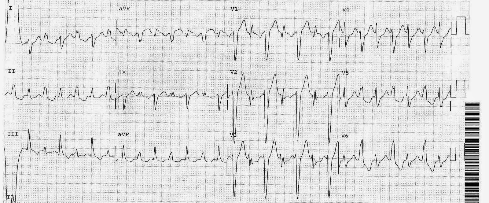
VT hai chiều do xuất huyết dưới nhện.
Agitation, Confusion, and Unusual Wide Complex Tachycardia. What is it, why did it occur, and how to treat? (Kích động, lú lẫn và nhịp nhanh QRS rộng bất thường. Đó là gì, vì sao xảy ra và điều trị thế nào?)

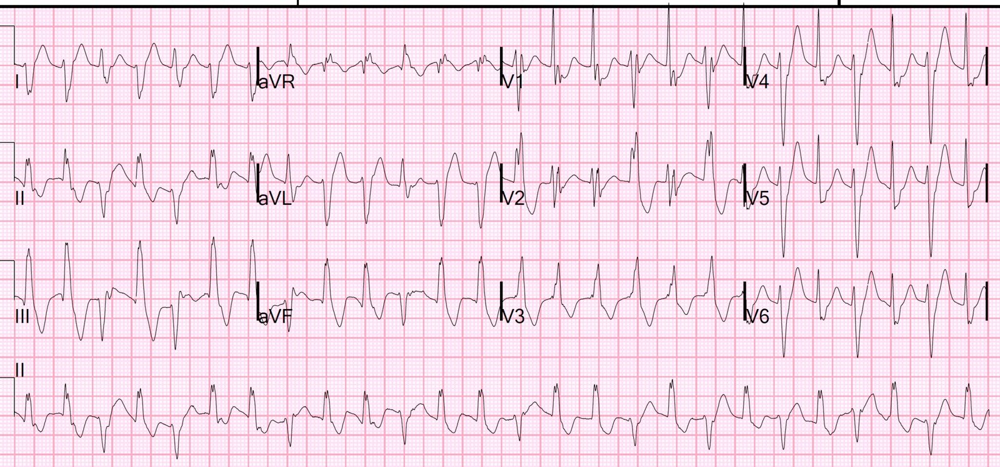
Đây là một ca VT do catecholamine khác:
Một nam giới ở độ tuổi 40 khởi phát tiền ngất khi tập luyện mức độ vừa……
https://drsmithsecgblog.com/ed-case-of-catecholaminergic/

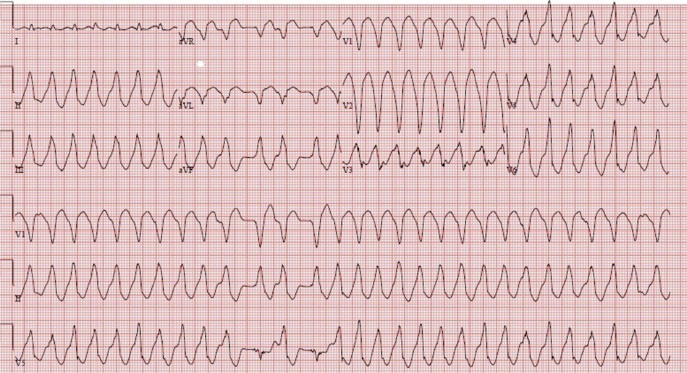
Kết cục
Bệnh nhân được làm xét nghiệm di truyền, phát hiện một đột biến liên quan đến CPVT ở gen RyR2. Hiện cô đã được chuyển từ metoprolol sang nadolol (một thuốc chẹn beta không chọn lọc) và các triệu chứng đã cải thiện. Cô đang được đánh giá để cấy máy khử rung tim (ICD). Cấy ICD ở bệnh nhân CPVT còn gây tranh cãi vì (các) cú sốc ICD không thích hợp có thể dẫn đến bão loạn nhịp.
Những điểm cần học
- Điện tâm đồ bình thường không loại trừ đường phụ — vì tiền kích thích trên điện tâm đồ có thể chỉ xuất hiện từng lúc.
- Nhiều nguyên nhân gây nhịp nhanh có thể cùng tồn tại ở một bệnh nhân. Bệnh nhân này được phát hiện có WpW với tiền kích thích từng lúc, cùng AVRT, AVNRT và CPVT đã được chứng minh!
- Khai thác bệnh sử kỹ lưỡng là tối quan trọng và lẽ ra đã có thể giúp chẩn đoán sớm hơn trong ca hôm nay.
- «Co giật» có thể do rối loạn nhịp gây ra. Đặc biệt cảnh giác nếu rối loạn co giật không đáp ứng với điều trị chống động kinh.
- Bản thân AVNRT hiếm khi gây ngất nếu chức năng thất trái tốt và không có bệnh van tim nặng.
Tài liệu tham khảo
- Burns, R. B. a. E. (2022, February 2).Pre-excitation syndromes. Life in the Fast Lane
- Napolitano, C., Mazzanti, A., Bloise, R., & Priori, S. G. (2022, June 23). Catecholaminergic polymorphic ventricular tachycardia
- Buttner, E. B. a. R. (2021, September 6). Bidirectional ventricular tachycardia (BVT). Life in the Fast Lane
- Wleklinski, M. J., Kannankeril, P. J. (2020). Molecular and tissue mechanisms of catecholaminergic polymorphic ventricular tachycardia. The Journal of Physiology, 598(14), 2817–2834
= = =
======================================
BÌNH LUẬN CỦA TÔI, bởi KEN GRAUER, MD (3/7/2025):
Tôi thấy ca bệnh hôm nay của Dr. Nossen thực sự hấp dẫn! May mắn thay — chẩn đoán đúng cho các cơn co giật tái diễn của bệnh nhân này cuối cùng đã được xác lập sau gần 2 thập kỷ không chắc chắn. Tôi sẽ nhấn mạnh một số bài học cần rút ra từ phần bàn luận của Dr. Nossen.
- Tìm ra 1 chẩn đoán không nhất thiết giải quyết được (các) vấn đề của bệnh nhân. Mặc dù cuối cùng (sau nhiều năm) đã nhận ra rằng các “cơn co giật” của bệnh nhân này có liên quan đến rối loạn nhịp — thì cả việc phát hiện tình trạng tiền kích thích khó nắm bắt (chỉ thỉnh thoảng mới bộc lộ) kèm AVRT được ghi nhận (đã triệt đốt thành công) — lẫn việc sau đó, sau khi triệt đốt AVRT, phát hiện AVNRT được ghi nhận qua đường dẫn truyền AV bình thường của bệnh nhân (sau đó cũng đã triệt đốt thành công) — đều không đủ để giải quyết nguyên nhân của các cơn ngất/co giật thường xuyên.
- Mãi đến khi thấy các loạt PVC đa dạng (multiform) (tức là trên Holter #2 và điện tâm đồ #3) — mà khi theo dõi từ xa trong bệnh viện cho thấy mối liên quan rõ ràng: tăng tần suất khi hoạt động thể lực và ngưng hoàn toàn lúc nghỉ — thì chẩn đoán CPVT (VT đa dạng do catecholamine) mới được đưa ra.
Nhìn lại thì luôn sáng tỏ 100% qua “kính nhìn hồi cứu” …
- Thật dễ để ngồi trên chiếc ghế ngả thoải mái trong văn phòng mà nhìn lại — và bình luận về “lẽ ra nên làm gì” (và lẽ ra nên làm khi nào). Nhận ra điều này ngay khi nó đang diễn ra thì khó hơn nhiều (đặc biệt vì chúng ta không biết các chi tiết cụ thể hơn của ca hôm nay).
- CPVT là một bệnh hiếm (tỷ lệ hiện mắc ước tính ~1:10.000, hoặc thấp hơn). Tôi chưa gặp một ca nào trong suốt nhiều thập kỷ hành nghề — và chỉ đến bây giờ, với vai trò tình nguyện viên tư vấn điện tâm đồ quốc tế qua internet, tôi mới gặp các ca CPVT do các bác sĩ khác mô tả lại cho tôi. Rất dễ không nghĩ đến CPVT — vì phần lớn chúng ta đơn giản là không gặp bệnh này. Nhưng như Dr. Nossen đã nói — chúng ta cần biết rằng bệnh lý này có tồn tại — và cần nghĩ đến nó ở những người trẻ có điện tâm đồ nền bình thường, không có bệnh tim đã biết, mà kể lại mối liên quan rõ rệt giữa hoạt động thể lực và/hoặc căng thẳng cảm xúc với các triệu chứng hồi hộp đánh trống ngực hay ngất xỉu của họ.
- Bệnh nhân hôm nay đã được ghi Holter nhiều lần trong nhiều năm. Là người đã đọc toàn bộ Holter cho 35 người hành nghề trong suốt 30 năm (với tư cách bác sĩ chính tại Trung tâm Y học Gia đình của chúng tôi) — điều “bất biến” duy nhất trong vô số Holter tôi đã đọc là sự vắng mặt của Nhật ký bệnh nhân ở hơn 90% số Holter tôi đọc. Không thể đối chiếu triệu chứng với thời điểm xảy ra rối loạn nhịp nếu bệnh nhân không ghi nhật ký.
- Tương tự, là một bác sĩ lâm sàng không chuyên thần kinh — tôi đã được dạy và thường xuyên khuyên bệnh nhân co giật ghi Nhật ký co giật. Lý do là việc tuân thủ ghi nhật ký co giật đều đặn, bao gồm ngày, giờ và thời gian kéo dài của cơn — và đặc biệt là bệnh nhân đang làm gì khi cơn co giật xảy ra — là MẤU CHỐT để tìm ra các “yếu tố khởi phát” tiềm tàng của cơn co giật, đồng thời cung cấp phản hồi về việc các biện pháp điều trị có hiệu quả hay không.
- Điểm MẤU CHỐT: Trong ca hôm nay, nếu nhật ký co giật được ghi chép chính xác — có lẽ nó đã gợi ý cân nhắc hoạt động thể lực và/hoặc căng thẳng cảm xúc là yếu tố khởi phát thường gặp của các cơn co giật/ngất từ rất lâu trước 2 thập kỷ mà phải mất chừng ấy thời gian mới xác lập được mối liên quan này.
- LƯU Ý: Phân biệt co giật với rối loạn nhịp là nguyên nhân của các cơn có thể cực kỳ khó. Dù vậy — một Nghiệm pháp gắng sức trên thảm lăn tại phòng khám có lẽ đã cho chẩn đoán ở thời điểm sớm hơn nhiều trong diễn tiến của ca hôm nay, một khi đã nhận ra vai trò của hoạt động thể lực là yếu tố khởi phát chính.
= = = = = = = = = = = = = = = = = = = =
Vậy VT hai chiều (BiDirectional VT) là gì?
Để ôn lại — nên biết 4 dạng hình thái cơ bản của VT (nhịp nhanh thất — Ventricular Tachycardia): i) VT đơn dạng; ii) VT đa dạng (PMVT) — bao gồm xoắn đỉnh (Torsades de Pointes); iii) VT đa hình thái (pleomorphic); và iv) VT hai chiều (BDVT). Tôi đã ôn lại các thuật ngữ này trong bài ngày 1 tháng Sáu năm 2020 trên Dr. Smith’s ECG Blog — và ở đây chỉ giới hạn bình luận về BDVT:
- VT hai chiều — là đặc điểm chẩn đoán MẤU CHỐT của CPVT trong ca hôm nay. Trong 4 dạng hình thái VT nêu trên — BDVT là dạng ít gặp nhất, với khoảng cách rất xa. Nhịp này đặc trưng bởi sự luân phiên trục QRS từng nhát một. Nó khác với PMVT và VT đa hình thái — vì có một kiểu hình nhất quán (thường là các chu kỳ dài-ngắn luân phiên) xuyên suốt cơn VT. Đúng như tên gọi, có 2 hình dạng QRS trong VT hai chiều — và chúng thường luân phiên cách một nhát.
ĐIỂM THEN CHỐT (PEARL): Cần hiểu rằng VT hai chiều có thể khó nhận ra đến mức nào. Đó là vì nhịp này không phổ biến — tần số của nhịp này thường nhanh (nên không dễ xác định liệu sóng P có đang ẩn trong sóng T hay trong các phức bộ QRS rộng hay không) — và dễ nhầm nhịp này với nhịp đôi thất hoặc blốc nhánh luân phiên. LƯU Ý: Khi cân nhắc chẩn đoán BDVT — hãy nghĩ đến một trong các bệnh lý sau, vốn được biết là dễ dẫn đến rối loạn nhịp này:
- Ngộ độc digitalis
- Viêm cơ tim cấp
- Nhồi máu cơ tim cấp
- Liệt chu kỳ hạ kali máu
- CPVT (VT đa dạng do catecholamine — Catecholaminergic PolyMorphic VT )
- U tim di căn
- Một số thể hội chứng QT dài
- Ngộ độc aconite từ thảo dược
LƯU Ý: Do Digoxin ngày càng ít được dùng trong những năm gần đây — CPVT có lẽ là nguyên nhân thường gặp nhất của VT hai chiều. Như Dr. Nossen đã nêu — rối loạn nhịp tim có tính gia đình này là hậu quả của đột biến gen.
- Tim bình thường về cấu trúc ở bệnh nhân CPVT. Do đó — điện tâm đồ lúc nghỉ thường bình thường.
- Như Dr. Nossen đã nêu — bệnh nhân CPVT có nguy cơ cao bị rối loạn nhịp ác tính. Điển hình — các rối loạn nhịp này được khởi phát bởi gắng sức hoặc các trạng thái cảm xúc mãnh liệt (tức là gắn với tăng phóng thích catecholamine).
- Cơ chế gây rối loạn nhịp ác tính trong CPVT là hậu quả của đột biến gen. Đột biến này làm tăng nồng độ Ca++ nội bào — tạo điều kiện cho hậu khử cực và hoạt động loạn nhịp khởi kích — thường bắt đầu bằng nhiều PVC rồi tiến triển thành VT hai chiều. Nếu nhịp này tiếp diễn — BDVT có xu hướng đáng lo ngại là chuyển thành rung thất (VFib), điều giải thích tỷ lệ tử vong cao của bệnh này nếu không được chẩn đoán (Napolitano và cs. — Gene Reviews, 2022).
- Điều trị CPVT nhằm ức chế hoạt động adrenergic quá mức — đó là lý do thuốc chẹn ß là thuốc được lựa chọn cho cả điều trị cấp lẫn điều trị lâu dài (Ưu tiên thuốc chẹn ß không chọn lọc = nadolol, propranolol). Nếu thuốc chẹn ß + bổ sung flecainide không kiểm soát được các cơn — có chỉ định ICD.
- Điểm MẤU CHỐT: Nên tránh các môn thể thao thi đấu và/hoặc các hình thức gắng sức nặng khác!
- T.B. (P.S.): Do bệnh có tính di truyền — nên tư vấn di truyền!
===================================